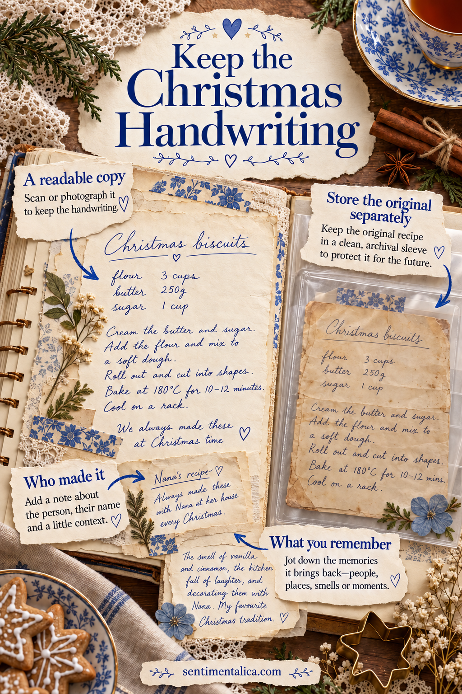
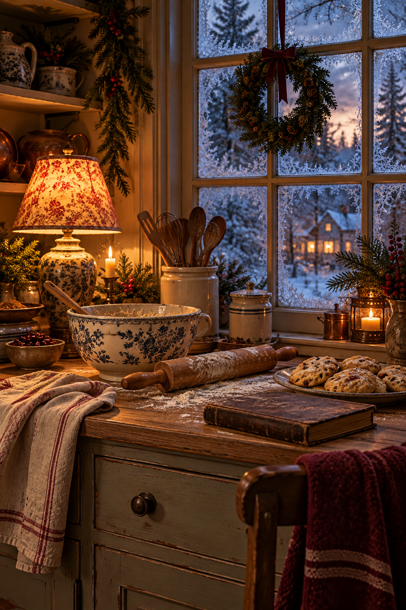

A handwritten Christmas recipe carries more than ingredients. It might hold someone’s spelling, a familiar underline, or a splatter from a kitchen you remember. You can bring that feeling into a journal without gluing down the original. Make a readable working copy, then give the story around it a little space of its own.
Start with a copy you can actually use
Photograph or scan the recipe before beginning the craft. Set it flat in even light, keep the camera square to the page, and check that the faintest pencil and every edge are visible. Save an untouched version before cropping or adjusting anything. If the recipe has a second side, copy that too.
Print a trial at a size you can read comfortably while sitting at a table. A full-page copy may need a fold-out or a larger journal. Shrinking important handwriting to make it fit a pretty frame defeats the purpose. Put the original away before bringing scissors, adhesive, tea, or cooking ingredients onto the desk.
Write down what the paper cannot tell you
On another slip, note whose recipe it is and what you know about its history. “Aunt Mara’s biscuits, copied from the card she kept by the cooker” is useful even if you do not know the year. Separate certainty from recollection: “I think she baked these every Christmas Eve” is more honest than inventing a tradition.

If someone can explain an unclear instruction, ask before you reinterpret it. “A little milk” may have meant a texture rather than a measure. Record the answer with the person’s name and the date. Keep their explanation beside the copy instead of altering the photographed handwriting, so the original wording remains visible.
Build the page around the readable recipe
Lay the copy on your journal page and mark its corners lightly in pencil. Leave space for the page to bend at the spine. Put the family-story label beside or below it, then try a small decorative paper strip at an outer edge. Keep busy imagery outside the ingredient list and method.
For a loose copy, make simple corner holders from small folded triangles of plain paper. Test them with a spare sheet of the same size. Glue only the holders to the journal, then slide the copy in after they dry. This lets you lift the working copy out rather than taking the whole journal into the kitchen.
Make a separate home for what happens when you bake
Add a plain fold-out or a short writing panel for your own notes. Date each attempt. Record changes as changes: “Our oven needed five minutes longer” or “Used orange zest this time.” You are building a usable family record, so future readers should be able to distinguish the inherited recipe from your version.

A sentence about the day adds another layer without needing a photograph: “We made these while the rain tapped the window.” You could note who helped, what music was playing, or the moment everyone reached for a second piece. Leave some blank space for next year rather than trying to complete the story at once.
Finish so you can return to it
Check that the removable copy slides free without catching, the writing remains easy to read, and no glued edge overlaps a useful instruction. Write a small reference to where the original is stored, such as “Original in the family recipe box.” Keep that private if the page will be shared publicly.
Your page does not have to resemble an old cookbook to feel meaningful. Familiar handwriting, clear practical notes, and one remembered detail already connect the recipe to a person. A quiet Christmas border simply gives that connection a place to rest.